<!DOCTYPE html>
<html lang="en">
  <head>
    <meta charset="utf-8" />
    <meta name="viewport" content="width=device-width, initial-scale=1.0, maximum-scale=1.0, user-scalable=no" />

    <title>Creativity & Authorship</title>
    <link rel="stylesheet" href="dist/reveal.css" />
    <link rel="stylesheet" href="dist/theme/black.css" id="theme" />
    <link rel="stylesheet" href="plugin/highlight/zenburn.css" />
	<link rel="stylesheet" href="css/layout.css" />
	<link rel="stylesheet" href="plugin/customcontrols/style.css">
	<link rel="stylesheet" href="plugin/chalkboard/style.css">

	<link rel="stylesheet" href="plugin/reveal-pointer/pointer.css" />


    <script defer src="dist/fontawesome/all.min.js"></script>

	<script type="text/javascript">
		var forgetPop = true;
		function onPopState(event) {
			if(forgetPop){
				forgetPop = false;
			} else {
				parent.postMessage(event.target.location.href, "app://obsidian.md");
			}
        }
		window.onpopstate = onPopState;
		window.onmessage = event => {
			if(event.data == "reload"){
				window.document.location.reload();
			}
			forgetPop = true;
		}

		function fitElements(){
			const itemsToFit = document.getElementsByClassName('fitText');
			for (const item in itemsToFit) {
				if (Object.hasOwnProperty.call(itemsToFit, item)) {
					var element = itemsToFit[item];
					fitElement(element,1, 1000);
					element.classList.remove('fitText');
				}
			}
		}

		function fitElement(element, start, end){

			let size = (end + start) / 2;
			element.style.fontSize = `${size}px`;

			if(Math.abs(start - end) < 1){
				while(element.scrollHeight > element.offsetHeight){
					size--;
					element.style.fontSize = `${size}px`;
				}
				return;
			}

			if(element.scrollHeight > element.offsetHeight){
				fitElement(element, start, size);
			} else {
				fitElement(element, size, end);
			}		
		}


		document.onreadystatechange = () => {
			fitElements();
			if (document.readyState === 'complete') {
				if (window.location.href.indexOf("?export") != -1){
					parent.postMessage(event.target.location.href, "app://obsidian.md");
				}
				if (window.location.href.indexOf("print-pdf") != -1){
					let stateCheck = setInterval(() => {
						clearInterval(stateCheck);
						window.print();
					}, 250);
				}
			}
	};


        </script>
  </head>
  <body>
    <div class="reveal">
      <div class="slides"><section  data-markdown><script type="text/template"><!-- .slide: class="drop" -->
<div class="" style="position: absolute; left: 0px; top: 0px; height: 1200px; width: 1920px; min-height: 1200px; display: flex; flex-direction: column; align-items: center; justify-content: center" absolute="true">

# Creativity and Authorship
## AI & Society ― week 9


[Dr Daniel Chávez Heras](https://movingpixel.net/)

[6AAVC307](https://keats.kcl.ac.uk/course/view.php?id=110858) | [7AAVCD42](https://keats.kcl.ac.uk/course/view.php?id=108767)

2023-24
</div>

<aside class="notes"><p>This week we focus on creativity and authorship. We pay a visit to the neighbouring fields of computational creativity and computational aesthetics to discuss the extent to which AI is putting pressure on notions of originality and authorship. We examine the effect generative AI systems such as DALLE are having on legal frameworks; the challenges they pose to copyright, and how they are unsettling the creative industries.</p>
</aside></script></section><section  data-markdown><script type="text/template"><!-- .slide: class="drop" -->
<div class="" style="position: absolute; left: 0px; top: 0px; height: 1200px; width: 1920px; min-height: 1200px; display: flex; flex-direction: column; align-items: center; justify-content: center" absolute="true">

# ChatGPT and human creativity


<iframe width="1280" height="720" src="https://www.youtube.com/embed/iGJcF4bLKd4?si=VbAfxspUIfawov5T" title="YouTube video player" frameborder="0" allow="accelerometer; autoplay; clipboard-write; encrypted-media; gyroscope; picture-in-picture; web-share" allowfullscreen></iframe>
</div>

<aside class="notes"><p>This week we start with a short video
Examine in detail this &quot;creative dance&quot;</p>
</aside></script></section><section  data-markdown><script type="text/template"><!-- .slide: class="has-dark-background drop" data-background-color="#2b1804" -->
<div class="" style="position: absolute; left: 0px; top: 0px; height: 1200px; width: 1920px; min-height: 1200px; display: flex; flex-direction: column; align-items: center; justify-content: center" absolute="true">

# The road ahead
<div class="callout callout-color8">
<div class="callout-title">
<div class="callout-icon">

<i class="fas fa-list" ></i>


</div>
<div class="callout-title-inner">

In today's lecture:  

</div>
</div>
<div class="callout-content">

1. Agency, personhood, ownership

2. Origins and purposes of copyright

3. Creativity and creative labour

4. Questions

</div>
</div>
</div></script></section><section  data-markdown><script type="text/template"><!-- .slide: class="has-dark-background drop" data-background-color="#304f5e" -->
<div class="" style="position: absolute; left: 0px; top: 0px; height: 1200px; width: 1920px; min-height: 1200px; display: flex; flex-direction: column; align-items: center; justify-content: center" absolute="true">

# 1. Agency, personhood, ownership
## Who gets to own ideas?

<i class="fas fa-user-check fa-4x" ></i>
</div></script></section><section  data-markdown><script type="text/template"><!-- .slide: class="drop" -->
<div class="" style="position: absolute; left: 0px; top: 0px; height: 1200px; width: 1920px; min-height: 1200px; display: flex; flex-direction: column; align-items: center; justify-content: center" absolute="true">

>... the exclusive and exclusionary mechanisms through which agency and personhood have been granted (or withheld) have often served to disadvantage and exploit marginalised groups

\- M Zeilinger, 2021
</div></script></section><section  data-markdown><script type="text/template"><!-- .slide: class="drop" -->
<div class="" style="position: absolute; left: 0px; top: 0px; height: 1200px; width: 1920px; min-height: 1200px; display: flex; flex-direction: column; align-items: center; justify-content: center" absolute="true">

- ## Agent
- ## Person
- ## Owner
</div>

<aside class="notes"><p>Not every agent is a person, not every person is an owner.
Martin&#39;s idea is that these three concepts underlie the modern notions of IP</p>
</aside></script></section><section  data-markdown><script type="text/template"><!-- .slide: class="drop" -->
<div class="" style="position: absolute; left: 0px; top: 0px; height: 1200px; width: 1920px; min-height: 1200px; display: flex; flex-direction: column; align-items: center; justify-content: center" absolute="true">

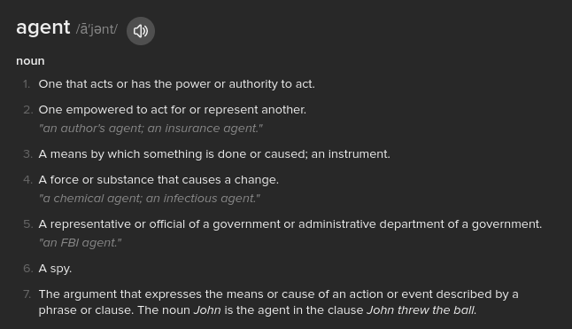
</div>

<aside class="notes"><p>numbers 1 and 2 are usually understood to be people
numbers 3 and 4 need not be people</p>
</aside></script></section><section  data-markdown><script type="text/template"><!-- .slide: class="drop" -->
<div class="" style="position: absolute; left: 0px; top: 0px; height: 1200px; width: 1920px; min-height: 1200px; display: flex; flex-direction: column; align-items: center; justify-content: center" absolute="true">

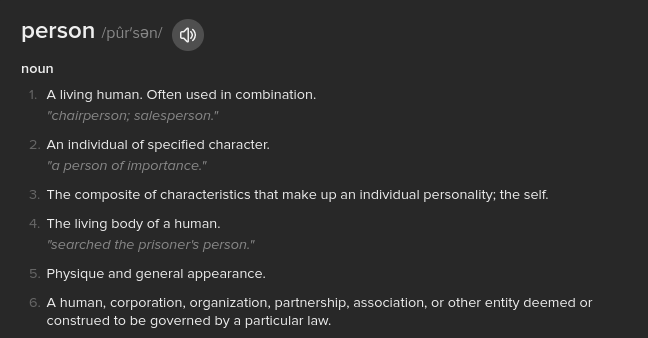
</div>

<aside class="notes"><p>individual human
involves a sense of &quot;the self&quot;
involves having &quot;a body&quot;</p>
</aside></script></section><section  data-markdown><script type="text/template"><!-- .slide: class="drop" -->
<div class="" style="position: absolute; left: 0px; top: 0px; height: 1200px; width: 1920px; min-height: 1200px; display: flex; flex-direction: column; align-items: center; justify-content: center" absolute="true">

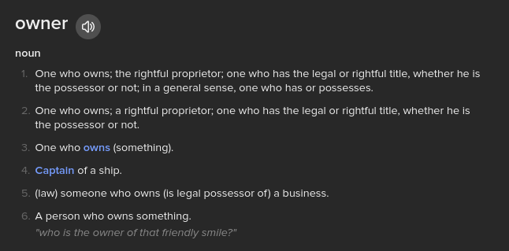
</div>

<aside class="notes"><p>a person who owns something
An owner, is a person (human) who has a certain type of agency.
An agent</p>
</aside></script></section><section  data-markdown><script type="text/template"><!-- .slide: class="drop" -->
<div class="" style="position: absolute; left: 0px; top: 0px; height: 1200px; width: 1920px; min-height: 1200px; display: flex; flex-direction: column; align-items: center; justify-content: center" absolute="true">

- There are agents who are not persons (algorithms)
- There are persons who do not or cannot own anything (the destitute, the dead)
- There are non-person entities who can own stuff (corporations)
- There are agents who can act on behalf of persons or other agents (non-human animals)
- Non-human agents cannot usually own property
</div></script></section><section  data-markdown><script type="text/template"><!-- .slide: class="has-dark-background drop" data-background-color="#304f5e" -->
<div class="" style="position: absolute; left: 0px; top: 0px; height: 1200px; width: 1920px; min-height: 1200px; display: flex; flex-direction: column; align-items: center; justify-content: center" absolute="true">

# 2. Copyright
## Origins and purposes of the right to copy

<i class="fas fa-copyright fa-4x" ></i>
</div></script></section><section  data-markdown><script type="text/template"><!-- .slide: class="drop" -->
<div class="" style="position: absolute; left: 0px; top: 0px; height: 1200px; width: 1920px; min-height: 1200px; display: flex; flex-direction: column; align-items: center; justify-content: center" absolute="true">

## For the most of human history, ideas were free to copy
### what changed?
</div>

<aside class="notes"><p>Shakespeare, Cervantes, Rembrandt, Hypathia, <a href="https://en.wikipedia.org/wiki/Hildegard_of_Bingen" title="Hildegard of Bingen">Hildegard of Bingen</a><a href="https://en.wikipedia.org/wiki/Sor_Juana_In%C3%A9s_de_la_Cruz" title="Sor Juana Inés de la Cruz">Sor Juana Inés de la Cruz</a><a href="https://en.wikipedia.org/wiki/Mary_Wollstonecraft" title="Mary Wollstonecraft">Mary Wollstonecraft</a>
why and how did this change?
light bulb example</p>
</aside></script></section><section  data-markdown><script type="text/template"><!-- .slide: class="drop" -->
<div class="" style="position: absolute; left: 0px; top: 0px; height: 1200px; width: 1920px; min-height: 1200px; display: flex; flex-direction: column; align-items: center; justify-content: center" absolute="true">

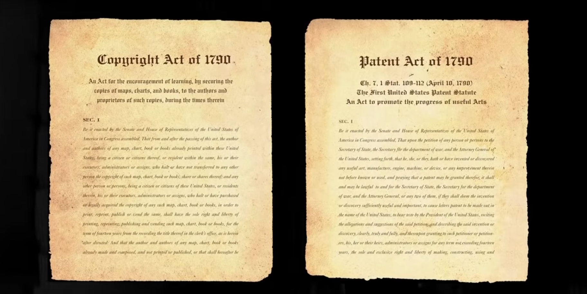


In the USA, copyright covered media and patents covered inventions

notes:
for the most part of human history, ideas were free: Shakespeare, Gutenberg, Rembrandt
</div></script></section><section  data-markdown><script type="text/template"><!-- .slide: class="drop" -->
<div class="" style="position: absolute; left: 0px; top: 0px; height: 1200px; width: 1920px; min-height: 1200px; display: flex; flex-direction: column; align-items: center; justify-content: center" absolute="true">

## These new rules (laws) were designed to encourage the proliferation of new ideas by providing a free and <mark>limited period of exclusivity</mark> to creators
</div>

<aside class="notes"><p>a period where no one else was allowed to copy your work
a window of time in which investors in innovation could cover their costs before their work was released back to the public domain</p>
</aside></script></section><section  data-markdown><script type="text/template"><!-- .slide: class="drop" -->
<div class="" style="position: absolute; left: 0px; top: 0px; height: 1200px; width: 1920px; min-height: 1200px; display: flex; flex-direction: column; align-items: center; justify-content: center" absolute="true">

## At the turn of the 19th century, ideas became a form of <mark>property</mark>
</div></script></section><section  data-markdown><script type="text/template"><!-- .slide: class="drop" -->
<div class="" style="position: absolute; left: 0px; top: 0px; height: 1200px; width: 1920px; min-height: 1200px; display: flex; flex-direction: column; align-items: center; justify-content: center" absolute="true">

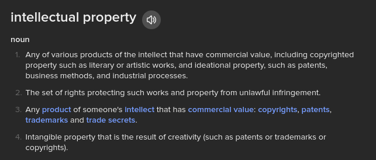
</div></script></section><section  data-markdown><script type="text/template"><!-- .slide: class="drop" -->
<div class="" style="position: absolute; left: 0px; top: 0px; height: 1200px; width: 1920px; min-height: 1200px; display: flex; flex-direction: column; align-items: center; justify-content: center" absolute="true">

## What counts as intellectual property in the UK

>Intellectual property is something that you create using your mind - for example, a story, an invention, an artistic work or a symbol.

...

Source: https://www.gov.uk/intellectual-property-an-overview
</div></script></section><section  data-markdown><script type="text/template"><!-- .slide: class="drop" -->
<div class="" style="position: absolute; left: 0px; top: 0px; height: 1200px; width: 1920px; min-height: 1200px; display: flex; flex-direction: column; align-items: center; justify-content: center" absolute="true">

### Owning intellectual property in the UK

You own intellectual property if you:

- created it (and it meets the requirements for [copyright](https://www.gov.uk/copyright), [a patent](https://www.gov.uk/patent-your-invention) or [a design](https://www.gov.uk/register-a-design))
- bought intellectual property rights from the creator or a previous owner
- have a brand that could be a [trade mark](https://www.gov.uk/how-to-register-a-trade-mark), for example, a well-known product name

Intellectual property can:

- have more than one owner
- belong to people or businesses
- be sold or transferred

Intellectual property rights allow you to make money from the intellectual property you own.

...

Source: https://www.gov.uk/intellectual-property-an-overview
</div></script></section><section  data-markdown><script type="text/template"><!-- .slide: class="drop" -->
<div class="" style="position: absolute; left: 0px; top: 0px; height: 1200px; width: 1920px; min-height: 1200px; display: flex; flex-direction: column; align-items: center; justify-content: center" absolute="true">

### Copyright protects <mark>media</mark> such as:

- original literary, dramatic, musical and artistic work, including illustration and photography
- original non-literary written work, such as software, web content and databases
- sound and music recordings
- film and television recordings
- broadcasts
- the layout of published editions of written, dramatic and musical works

...

Source: https://www.gov.uk/intellectual-property-an-overview
</div>

<aside class="notes"><p>granted automatically in the UK
You can mark your work with the copyright symbol (©), your name and the year of creation. Whether you mark the work or not doesn’t affect the level of protection you have.</p>
<p>Copyright prevents people from:</p>
<ul>
<li>copying your work</li>
<li>distributing copies of it, whether free of charge or for sale</li>
<li>renting or lending copies of your work</li>
<li>performing, showing or playing your work in public</li>
<li>making an adaptation of your work</li>
<li>putting it on the internet</li>
</ul>
</aside></script></section><section  data-markdown><script type="text/template"><!-- .slide: class="drop" -->
<div class="" style="position: absolute; left: 0px; top: 0px; height: 1200px; width: 1920px; min-height: 1200px; display: flex; flex-direction: column; align-items: center; justify-content: center" absolute="true">

### Patents protect <mark>inventions</mark> that are:

- **new** - it must not have been made publicly available anywhere in the world, for example it must not be described in a publication
- **inventive** - for example, it cannot be an obvious change to something that already exists
- either something that can be **made and used**, a technical **process**, or a **method** of doing something

...

Source: https://www.gov.uk/intellectual-property-an-overview
</div>

<aside class="notes"><p>A patent lasts 5 years. If you want it to stay in force after that, you must renew it every year, up to a maximum of 20 years.</p>
<p>Cannot patent: 
&quot;software that has a ‘non-technical’ purpose&quot;
&quot;‘essentially biological’ processes like cross-breeding animals or varieties of plants&quot;
&quot;the way information is presented&quot;
&quot;a discovery, scientific theory or mathematical method&quot;
&quot;a method of medical treatment or diagnosis&quot;
&quot;a way of doing business, playing a game or thinking&quot;
&quot;literary, dramatic, musical or artistic works&quot;</p>
</aside></script></section><section  data-markdown><script type="text/template"><!-- .slide: class="drop" -->
<div class="" style="position: absolute; left: 0px; top: 0px; height: 1200px; width: 1920px; min-height: 1200px; display: flex; flex-direction: column; align-items: center; justify-content: center" absolute="true">

### Design registry protects the <mark>appearance</mark> of a product:

The design of something can include one or more of the following:

- physical shape
- configuration (or how different parts of a design are arranged together)
- decoration or colour
- pattern

...

Source: https://www.gov.uk/intellectual-property-an-overview
</div>

<aside class="notes"><p>A design registration lasts 5 years. You must renew your design registration every 5 years to keep it protected - up to a maximum of 25 years.
Registering a design costs from £50 for one design to £150 for up to 50.
You cannot register:</p>
<ul>
<li>offensive material, for example swear words or pornographic images</li>
<li>designs making use of national flags you do not have permission to use</li>
<li>designs making use of official emblems or hallmarks, for example the Olympic rings or coats of arms</li>
<li>the functionality of a design, for example a chair that folds down more quickly than others of the same kind</li>
</ul>
</aside></script></section><section  data-markdown><script type="text/template"><!-- .slide: class="drop" -->
<div class="" style="position: absolute; left: 0px; top: 0px; height: 1200px; width: 1920px; min-height: 1200px; display: flex; flex-direction: column; align-items: center; justify-content: center" absolute="true">

## #NotoAIArt

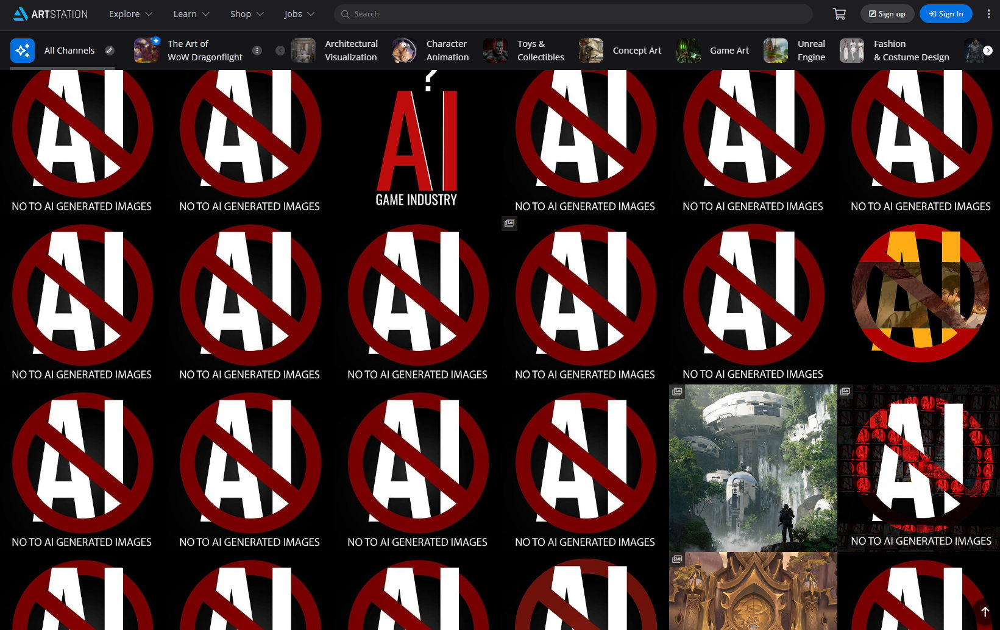
</div></script></section><section  data-markdown><script type="text/template"><!-- .slide: class="drop" -->
<div class="" style="position: absolute; left: 0px; top: 0px; height: 1200px; width: 1920px; min-height: 1200px; display: flex; flex-direction: column; align-items: center; justify-content: center" absolute="true">

>another human will never look at an image the exact same way the original artist did. They will never move their hands the way the original artist did. AI doesn’t do the same – it can only copy. [When a human artist does] mimic a style, or pass off a piece of artwork as their own, it is incredibly frowned upon – and in some cases could be seen as copyright infringement. This is essentially what AI art is doing.

\- Anoosha Syed

...

quoted in [The Guardian](https://www.theguardian.com/artanddesign/2023/jan/23/its-the-opposite-of-art-why-illustrators-are-furious-about-ai)
</div></script></section><section  data-markdown><script type="text/template"><!-- .slide: class="drop" -->
<div class="" style="position: absolute; left: 0px; top: 0px; height: 1200px; width: 1920px; min-height: 1200px; display: flex; flex-direction: column; align-items: center; justify-content: center" absolute="true">

## Copyright was conceived as a system of financial incentives for creators to encourage <mark>innovation</mark> and enrich the <mark>public domain</mark>
</div></script></section><section  data-markdown><script type="text/template"><!-- .slide: class="has-dark-background drop" data-background-color="#304f5e" -->
<div class="" style="position: absolute; left: 0px; top: 0px; height: 1200px; width: 1920px; min-height: 1200px; display: flex; flex-direction: column; align-items: center; justify-content: center" absolute="true">

# 3. Creativity and creative labour
## from the same to the new

<i class="fab fa-creative-commons fa-4x" ></i>
</div></script></section><section  data-markdown><script type="text/template"><!-- .slide: class="drop" -->
<div class="" style="position: absolute; left: 0px; top: 0px; height: 1200px; width: 1920px; min-height: 1200px; display: flex; flex-direction: column; align-items: center; justify-content: center" absolute="true">

## Computational creativity

<split even gap=3>

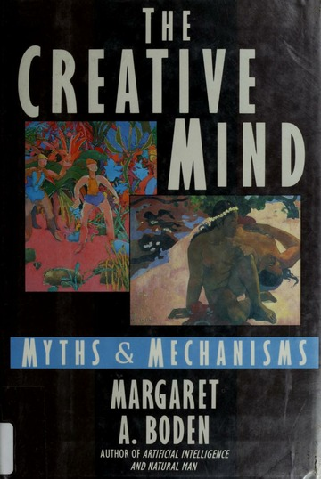


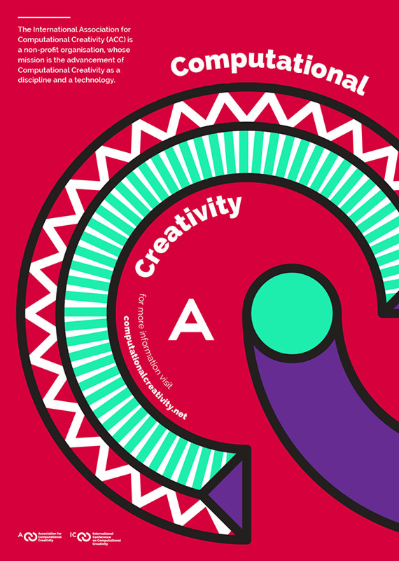


</split>

[International Conference of Computational Creativity](https://computationalcreativity.net/home/)
</div>

<aside class="notes"><p><strong>Margaret Ann Boden</strong> <a href="https://en.wikipedia.org/wiki/Officer_of_the_Order_of_the_British_Empire" title="Officer of the Order of the British Empire">OBE</a> <a href="https://en.wikipedia.org/wiki/Fellow_of_the_British_Academy" title="Fellow of the British Academy">FBA</a> (born 26 November 1936)1(<a href="https://en.wikipedia.org/wiki/Margaret_Boden#cite_note-1">https://en.wikipedia.org/wiki/Margaret_Boden#cite_note-1</a>) is a Research Professor of <a href="https://en.wikipedia.org/wiki/Cognitive_science" title="Cognitive science">Cognitive Science</a> in the Department of <a href="https://en.wikipedia.org/wiki/Informatics_(academic_field)" title="Informatics (academic field)">Informatics</a> at the <a href="https://en.wikipedia.org/wiki/University_of_Sussex" title="University of Sussex">University of Sussex</a>, where her work embraces the fields of <a href="https://en.wikipedia.org/wiki/Artificial_intelligence" title="Artificial intelligence">artificial intelligence</a>, psychology, philosophy, and <a href="https://en.wikipedia.org/wiki/Cognitive_science" title="Cognitive science">cognitive</a> and <a href="https://en.wikipedia.org/wiki/Computer_science" title="Computer science">computer science</a>.</p>
</aside></script></section><section  data-markdown><script type="text/template"><!-- .slide: class="drop" -->
<div class="" style="position: absolute; left: 0px; top: 0px; height: 1200px; width: 1920px; min-height: 1200px; display: flex; flex-direction: column; align-items: center; justify-content: center" absolute="true">

## Types of creativity
(according to Boden)

- _Combinational_ ― new combinations of familiar ideas
- _Exploratory_ ― generation of new ideas by exploration of a conceptual space
- _Transformational_ ― radical re-imagining of the conceptual space itself

...

see: ​​​[_Creativity in a Nutshell_](https://www.interaliamag.org/articles/margaret-boden-creativity-in-a-nutshell/) for a gentle introduction to Boden's work.
</div></script></section><section  data-markdown><script type="text/template"><!-- .slide: class="drop" -->
<div class="" style="position: absolute; left: 0px; top: 0px; height: 1200px; width: 1920px; min-height: 1200px; display: flex; flex-direction: column; align-items: center; justify-content: center" absolute="true">

## Combinational creativity


</div>

<aside class="notes"><p>variations of the Sicilian defence
The <em><a href="https://en.wikipedia.org/wiki/Encyclopaedia_of_Chess_Openings" title="Encyclopaedia of Chess Openings">Encyclopaedia of Chess Openings</a></em> classifies the Sicilian Defence under the codes B20 through B99, giving it more codes than any other opening.</p>
</aside></script></section><section  data-markdown><script type="text/template"><!-- .slide: class="drop" -->
<div class="" style="position: absolute; left: 0px; top: 0px; height: 1200px; width: 1920px; min-height: 1200px; display: flex; flex-direction: column; align-items: center; justify-content: center" absolute="true">

## Exploratory creativity

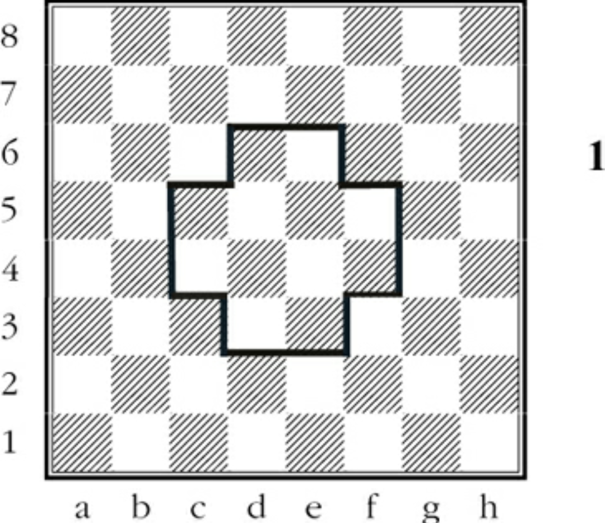
</div>

<aside class="notes"><p>the control of the centre</p>
</aside></script></section><section  data-markdown><script type="text/template"><!-- .slide: class="drop" -->
<div class="" style="position: absolute; left: 0px; top: 0px; height: 1200px; width: 1920px; min-height: 1200px; display: flex; flex-direction: column; align-items: center; justify-content: center" absolute="true">

## Transformational creativity
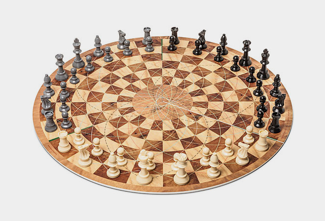
</div>

<aside class="notes"><p>a different game space altogether</p>
</aside></script></section><section  data-markdown><script type="text/template"><!-- .slide: class="drop" -->
<div class="" style="position: absolute; left: 0px; top: 0px; height: 1200px; width: 1920px; min-height: 1200px; display: flex; flex-direction: column; align-items: center; justify-content: center" absolute="true">

>We place a premium on the new, not because it is new, but because by definition it is scarce. The effects AI will have in scarcity rather than originality is what concerns artists, illustrators, and creative workers, for they rightly sense a radical transformation in the political economy of visual culture, from having a market for their creative labour, to this market being shocked through new kinds of machines machines made of images. 

\- D Chávez Heras, 2024
</div></script></section><section  data-markdown><script type="text/template"><!-- .slide: class="drop" -->
<div class="" style="position: absolute; left: 0px; top: 0px; height: 1200px; width: 1920px; min-height: 1200px; display: flex; flex-direction: column; align-items: center; justify-content: center" absolute="true">

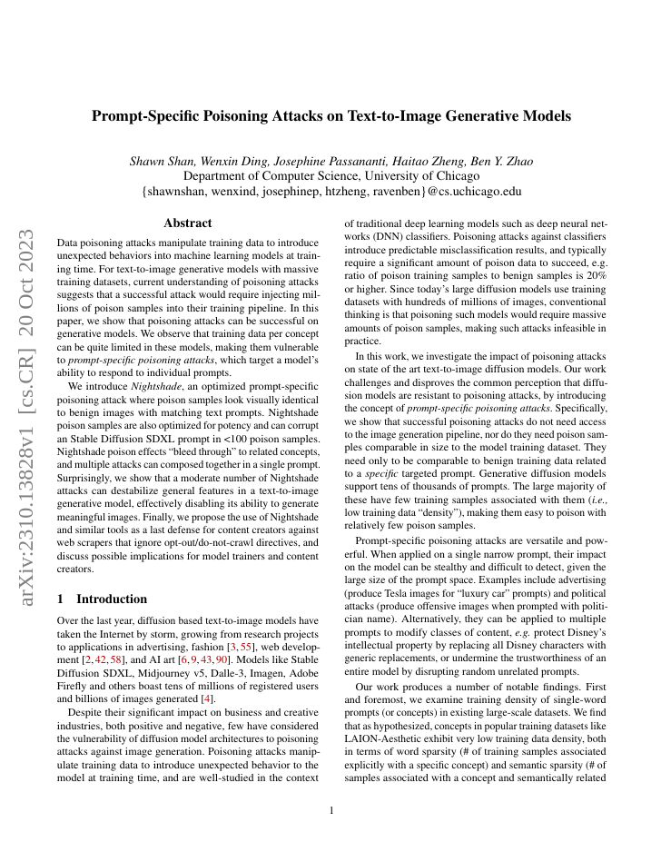


Read [more about Nightshade](https://www.technologyreview.com/2023/10/23/1082189/data-poisoning-artists-fight-generative-ai/), and here is the [preprint paper](https://arxiv.org/abs/2310.13828).
</div>

<aside class="notes"><p>Ben Zhao, a professor at the University of Chicago</p>
</aside></script></section><section  data-markdown><script type="text/template"><!-- .slide: class="drop" -->
<div class="" style="position: absolute; left: 0px; top: 0px; height: 1200px; width: 1920px; min-height: 1200px; display: flex; flex-direction: column; align-items: center; justify-content: center" absolute="true">

<iframe width="1080" height="720" src="https://www.youtube.com/embed/nyu4u3VZYaQ?si=0Ec9wwerxEPiZDzW" title="YouTube video player" frameborder="0" allow="accelerometer; autoplay; clipboard-write; encrypted-media; gyroscope; picture-in-picture; web-share" allowfullscreen></iframe>
</div></script></section><section  data-markdown><script type="text/template"><!-- .slide: class="has-dark-background drop" data-background-color="#2b1804" -->
<div class="" style="position: absolute; left: 0px; top: 0px; height: 1200px; width: 1920px; min-height: 1200px; display: flex; flex-direction: column; align-items: center; justify-content: center" absolute="true">

# The road behind

<div class="callout callout-color2">
<div class="callout-title">
<div class="callout-icon">

<i class="fas fa-fire-alt" ></i>


</div>
<div class="callout-title-inner">

In summary:

</div>
</div>
<div class="callout-content">

1. Agents, persons, and owners, have related but different kinds of moral and legal rights

2. The exclusive right to copy is relatively new, and it was originally meant to foster innovation for a strong public domain

3. This exclusivity eventually extended to intangible ideas and labour

4. We attach a social premium to innovation for economic as well as aesthetic reasons

</div>
</div>
</div></script></section><section  data-markdown><script type="text/template"><!-- .slide: class="drop" -->
<div class="" style="position: absolute; left: 0px; top: 0px; height: 1200px; width: 1920px; min-height: 1200px; display: flex; flex-direction: column; align-items: center; justify-content: center" absolute="true">

# Questions?
<i class="far fa-question-circle fa-4x" ></i>
</div></script></section></div>
    </div>

    <script src="dist/reveal.js"></script>

    <script src="plugin/markdown/markdown.js"></script>
    <script src="plugin/highlight/highlight.js"></script>
    <script src="plugin/zoom/zoom.js"></script>
    <script src="plugin/notes/notes.js"></script>
    <script src="plugin/math/math.js"></script>
	<script src="plugin/mermaid/mermaid.js"></script>
	<script src="plugin/chart/chart.min.js"></script>
	<script src="plugin/chart/plugin.js"></script>
	<script src="plugin/menu/menu.js"></script>
	<script src="plugin/customcontrols/plugin.js"></script>
	<script src="plugin/chalkboard/plugin.js"></script>
	<script src="plugin/reveal-pointer/pointer.js"></script>
	<script src="plugin/elapsed-time-bar/elapsed-time-bar.js"></script>

    <script>
      function extend() {
        var target = {};
        for (var i = 0; i < arguments.length; i++) {
          var source = arguments[i];
          for (var key in source) {
            if (source.hasOwnProperty(key)) {
              target[key] = source[key];
            }
          }
        }
        return target;
      }

	  function isLight(color) {
		let hex = color.replace('#', '');

		// convert #fff => #ffffff
		if(hex.length == 3){
			hex = `${hex[0]}${hex[0]}${hex[1]}${hex[1]}${hex[2]}${hex[2]}`;
		}

		const c_r = parseInt(hex.substr(0, 2), 16);
		const c_g = parseInt(hex.substr(2, 2), 16);
		const c_b = parseInt(hex.substr(4, 2), 16);
		const brightness = ((c_r * 299) + (c_g * 587) + (c_b * 114)) / 1000;
		return brightness > 155;
	}

	var bgColor = getComputedStyle(document.documentElement).getPropertyValue('--r-background-color').trim();
	var isLight = isLight(bgColor);

	if(isLight){
		document.body.classList.add('has-light-background');
	} else {
		document.body.classList.add('has-dark-background');
	}

      // default options to init reveal.js
      var defaultOptions = {
        controls: true,
        progress: true,
        history: true,
        center: true,
        transition: 'default', // none/fade/slide/convex/concave/zoom
        plugins: [
          RevealMarkdown,
          RevealHighlight,
          RevealZoom,
          RevealNotes,
          RevealMath.MathJax3,
		  RevealMermaid,
		  RevealChart,
		  RevealCustomControls,
		  RevealMenu,
	      RevealPointer,
		  RevealChalkboard, 
		  ElapsedTimeBar
        ],


    	allottedTime: 120 * 1000,

		mathjax3: {
			mathjax: 'plugin/math/mathjax/tex-mml-chtml.js',
		},
		markdown: {
		  gfm: true,
		  mangle: true,
		  pedantic: false,
		  smartLists: false,
		  smartypants: false,
		},

		mermaid: {
			theme: isLight ? 'default' : 'dark',
		},

		customcontrols: {
			controls: [
				{id: 'toggle-overview',
				title: 'Toggle overview (O)',
				icon: '<i class="fa fa-th"></i>',
				action: 'Reveal.toggleOverview();'
				},
				{ icon: '<i class="fa fa-pen-square"></i>',
				title: 'Toggle chalkboard (B)',
				action: 'RevealChalkboard.toggleChalkboard();'
				},
				{ icon: '<i class="fa fa-pen"></i>',
				title: 'Toggle notes canvas (C)',
				action: 'RevealChalkboard.toggleNotesCanvas();'
				},
			]
		},
		menu: {
			loadIcons: false
		}
      };

      // options from URL query string
      var queryOptions = Reveal().getQueryHash() || {};

      var options = extend(defaultOptions, {"width":1920,"height":1200,"margin":0,"controls":true,"progress":true,"slideNumber":true,"transition":"slide","transitionSpeed":"default"}, queryOptions);
    </script>

    <script>
      Reveal.initialize(options);
    </script>
  </body>

  <!-- created with Advanced Slides -->
</html>
